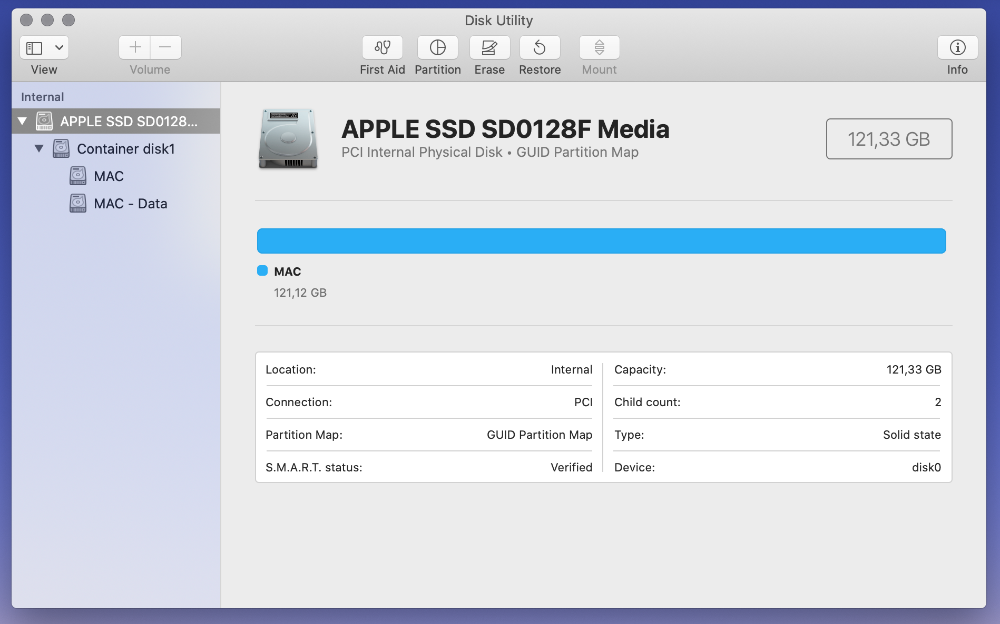

cyberblog

Do you have an older Macbook lying around somewhere? Well, I did. My Macbook Pro Late 2013 was catching dust in a drawer - last time I'd used it was in high school. I'd already purchased it second hand, and it was never in the best shape, having a scratched screen and exterior, and, besides all that, it only has 4 GB of RAM, making it pretty pointless for most of my work.
But I still love it, and, even if I could, I wouldn't want to get rid of it. I am nostalgic about old tech that way, and I like the idea of repurposing it. This laptop still has an amazing display, unlike any other laptop I've had since, and, overall, it is a solid piece of hardware. I decided I had a new objective for it - I want it to dual boot macOS and Linux.
Turns out Linux is excellent for old Macbooks, easy to install and very convenient. Here are some pros to consider:
My Macbook's specifications:
Let's get into it.
For now, I went with Ubuntu as my Linux distribution of choice. However, I might consider switching to Debian or Arch in the future, as they are more lightweight and use less RAM. I might also look into upgrading my mechanical drive to an SSD and taking my RAM up a notch - consider yourself lucky if you have at least 8 GB!
So, if you're following this tutorial, go ahead and download an LTS version of Ubuntu on your Mac.
In your terminal, you can run
Open Disk Utility and click on the main device - that's the APPLE SSD corresponding with the physical disk. Click Partition.
You can see the main container disk taking up all the storage. Click on the plus sign (+) to add a partition.
Choose the size, name, and make sure to input MS-DOS (FAT) format for your Linux partition.

Now be patient and do not interrupt while disk resizing is occurring! It may take a couple minutes. If the operation is successful, you can proceed to the next step.
BalenaEtcher is an open source utility that writes image files onto storage media, allowing us to create the bootable USB drive we'll use to flash Ubuntu on our Mac.
Download and install it, and, when you are done, plug in your USB flash drive or any drive of your choice (but make sure it has at least 8 GB of free space). Select the .iso Ubuntu image file you've downloaded at Step 1. And Flash!
This process may take a while - it took me 15 minutes. Once again, wait and do not close your laptop or disrupt this procedure.
Now that you've flashed Ubuntu on your USB drive, you can safely restart your laptop, while holding the alt/option key.
Note: Do not take out your USB drive until the very end of the Ubuntu installation, when you will be prompted to do so.
Once you have restarted your laptop as mentioned above, you will be able to choose which partition to boot. The Mac should present an orange partition on the screen, titled EFI Boot - select that one, and, when prompted, choose Try and Install Ubuntu.
The installation may differ based on the version of Ubuntu you've chosen, but following a standard installation shouldn't be too hard.
When you're given a choice, choose Manual partitioning (or Manual installation). This will allow you to configure your own disk partition for your Linux distribution.
Although disks aren't named as they were back in your Mac's Disk Utility, you can tell which ones are which - you should be interested in a fat32 (VFAT) disk corresponding with the size of the Linux partition you've created during Step 2. Mine was called sda3, with approximately 60.5 GB available - once you've found yours, select it and click on (-) to free up that space. Essentially, we'll partition that Linux partition even further, to organize our space better.
By selecting the free space and clicking the plus sign (+), you can create those new partitions. Here's my Ubuntu partitioning guide:
| Partition type | Size | File System | Mount point |
|---|---|---|---|
| Swap | 4 GB | swap | none |
| EFI | 500 MB | VFAT | |
| Root | 20 GB | Ext4 | |
| Home | 36 GB | Ext4 |
Each one of these partions has its purpose:
Finally, ensure that the device for boot loader installation is your main disk, or, if you are able to choose, the EFI partition you've just created. Click Next, and wait for the installation to be concluded. Once it does, you will be asked to remove your USB drive, click Enter and Restart.
And there you have it. You've just resurrected your old Macbook.
I hope you have fun with it - I'll be experimenting on mine for sure.